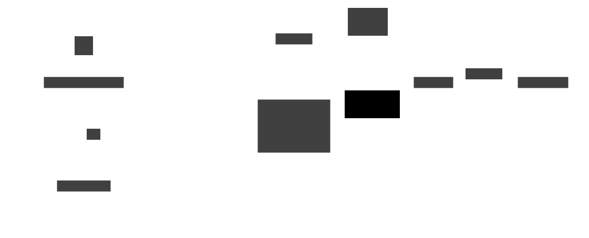
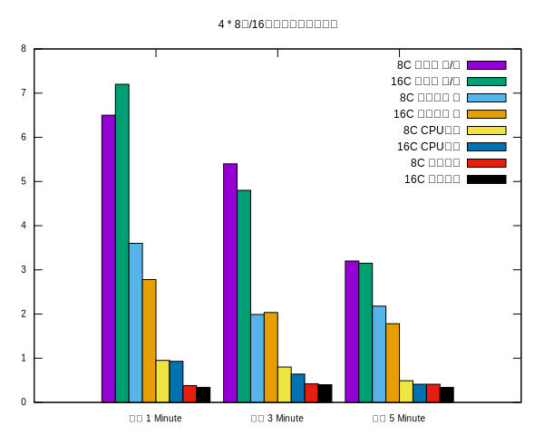

Clickhouse Tutorial
clickhouse 可用于联机分析OLAP的列式数据库管理系统. 定位与OLAP离线数据处理,相比于OLTP在线事务处理,clickhouse更关注于海量数据的计算分析, 关注的是数据的吞吐、查询速度、计算性能等指标.
简介
而对于数据频繁的变更不擅长. 所以clickhouse通常用来构建后端的时实数仓.
所谓列式存储是指,与Mysql这种行式存储的不同,数据是按列来集中存储的.因此在我们进行有限的字段数据分析的时候会读更少的文件,因此减少了很多的IO读取工作量.
对clickhouse最耗的是CPU, 因此clickhouse的部署需要独立的部署 .
-
OLAP
OLAP scenarios require real-time responses on top of large datasets for complex analytical queries with the following characteristics:
- Datasets can be massive - billions or trillions of rows
- Data is organized in tables that contain many columns
- Only a few columns are selected to answer any particular query
- Results must be returned in milliseconds or seconds
安装
sudo apt-get install -y clickhouse-server clickhouse-client
sudo service clickhouse-server start
clickhouse-client # or "clickhouse-client --password" if you've set up a password.
show databases; # a attempt for clickhouse
show tables; # a attempt for clickhouse
表引擎
表引擎是Clickhouse的一大特色
- 建表时必须指定, 决定了如何存储表, 从哪里读取数据.
- 支持哪些查询,以及如何支持, 有些语法在特定的表引擎才能使用.
- 是否可以多线程请求
- 数据复制参数
| 引擎 | 说明 |
| TinyLog | 不支持索引、没有并发. 一般保存小量的数据 |
| Memory | 数据以未压缩的原始形式直接保存在内存中, 重启数据会丢失, 简单查询下性能高, 不建议生产使用 |
| MergeTree | 每次插入时, 引擎进行一次合并再存入数据库, 合并树引擎是最强大的, 而且它有很多子分类 |
| RepalingMergeTree | 最大程度保证数据最终一致性 |
数据同步
- 期初数据使用全量同步的方式同步至clickhouse
- 增量数据使用kettle或者logstash定时抽取至clickhouse

-
实现
jdbc(datasource, schema, table) - returns table that is connected via JDBC driver.
This table function requires separate clickhouse-jdbc-bridge program to be running. It supports Nullable types (based on DDL of remote table that is queried).clickhouse sql statment
insert into report.target_table select * from jdbc('jdbc:mysql://localhost:3306/?user=root&password=root', `select * from origin_table where update_time>@1`)clickhouse execution
clickhouse-client --user ${ck_user} --password ${ck_pass} --port ${ck_port} \ -d report --multiquery < ../sql/${sql_name}
代码集成
clickhouse支持JDBC驱动, 因此集成click就如同集成一个数据源一样简单
-
JDBC驱动
<dependency> <groupId>com.clickhouse</groupId> <artifactId>clickhouse-jdbc</artifactId> <version>0.4.6</version> </dependency> -
多数据源
配置clickhouse多数据源配置类
package com.cloud.center.b3expand.config; import javax.sql.DataSource; import com.baomidou.mybatisplus.extension.spring.MybatisSqlSessionFactoryBean; import com.zaxxer.hikari.HikariDataSource; import org.apache.ibatis.session.SqlSessionFactory; import org.mybatis.spring.annotation.MapperScan; import org.springframework.beans.factory.annotation.Qualifier; import org.springframework.boot.autoconfigure.jdbc.DataSourceProperties; import org.springframework.boot.context.properties.ConfigurationProperties; import org.springframework.context.annotation.Bean; import org.springframework.context.annotation.Configuration; import org.springframework.core.io.support.PathMatchingResourcePatternResolver; /** * @author liu.zijie * @since 2023-09-12 **/ @Configuration @MapperScan(basePackages = "com.center.b3expand.mapper.clickhouse", sqlSessionFactoryRef = "clickHouseSqlSessionFactory") public class ClickHouseDataSourceConfig { @Bean("ckDataSourceProperties") @ConfigurationProperties(prefix = "spring.datasource.clickhouse") public DataSourceProperties ckDataSourceProperties() { return new DataSourceProperties(); } @Bean("ckDataSource") @Qualifier(value = "ckDataSource") @ConfigurationProperties(prefix = "spring.datasource.clickhouse.hikari") public HikariDataSource ckDataSource() { return ckDataSourceProperties().initializeDataSourceBuilder().type(HikariDataSource.class).build(); } @Bean(name = "clickHouseSqlSessionFactory") public SqlSessionFactory clickHouseSqlSessionFactory(@Qualifier("ckDataSource") DataSource dataSource) throws Exception { MybatisSqlSessionFactoryBean bean = new MybatisSqlSessionFactoryBean(); bean.setDataSource(dataSource); bean.setMapperLocations(new PathMatchingResourcePatternResolver() .getResources("classpath:mapper/*.xml")); bean.getObject().getConfiguration().setMapUnderscoreToCamelCase(true); bean.setTypeAliasesPackage("com.center.b3expand.po"); return bean.getObject(); } } -
数据库配置
spring: datasource: clickhouse: driverClassName: com.clickhouse.jdbc.ClickHouseDriver enabled: true url: jdbc:clickhouse:http://localhost:8123 username: dev password: 123 hikari: minimum-idel: 20 maximum-pool-size: 20 b3: auto-configured: false url: username: password: hikari: minimum-idel: 20 maximum-pool-size: 20
并发测试
数据基准: 并发8个来进行计算. 每秒并发8个每隔0.5s再触发一次, 则1分钟内执行查询 60 * 2 * 8 = 960次.
测试方法: 在1分钟内, 3分钟内、5分钟内分别执行960次查询来考核集群的性能.
查询SQL: 1600万条数据, 15个分组字段聚合查询
-
8核与16核压测
持续时间 8C 吞吐量 次/秒 16C 吞吐量 次/秒 8C 平均响应 秒 16C 平均响应 秒 8C CPU负载 16C CPU负载 8C 内存负载 16C 内存负载 压测 1 Minute 6.5 7.2 3.6 2.78 0.95 0.93 0.38 0.34 压测 3 Minute 5.4 4.8 1.99 2.035 0.80 0.64 0.42 0.40 压测 5 Minute 3.2 3.15 2.179 1.781 0.49 0.41 0.41 0.34 
数据显示:
-
横向对比:
- 在1分钟内16核最多能支持查询400多次（现有硬件不足以支撑继续增加硬件）, 但16核集群表现出更高的吞吐量（+11%）及更好的平均响应时间（+23%）
- 在3分钟执行960次查询的情况下, 4*16核的集群表现出更好的吞吐量和平均响应时间（但差距不大）, 16核的CPU最高负载要更低（+25%）,内存负载压力区分不大.
- 在5分钟执行960次查询的情况下,吞吐量及平均响应时间差距不大, CPU和内存的负载曲线接近, 说明压力都不大, 且都能较好的完成查询.
-
纵向对比:
- 8核的吞吐量在5、3、1分钟的压测情况下, 增幅为200% 同样16核的吞吐量的增幅为228%, 对比增加28%
- 8核的平均响应时间在1、3、5分钟的压测情况下, 增幅为165% 同样16核的平均响应的增幅为156%, 对比降低9%
在设定的查询需求情况下（1600万条数据, 15个分组字段聚合查询）,建议部署规格: 8核16G
- 在1分钟情况下, 8核和16核都不能满足要求, 且能支撑的请求数量均为400左右, 差异不大.
- 在3分钟情况下, 8核CPU使用率80%, 16核CPU使用率为60%, 所以8核CPU也足以支撑业务要求.
- 在5分钟情况下, 8核的CPU负载为49%, 16核的CPU负载为41%, 使用都未超过50%, 都有足够的剩余.
-
-
并发优化
- 多分片、多副本, 多次请求可以可以均衡的分担至不同的Node. 从而提升集群的吞吐量
- 由于clickhouse对CPU消耗巨大,因此通过限流技术控制访问次数保证服务持续有效也将成为一项优化项
- 在业务场景满足的情况下适当使用缓存技术也是考虑的优化方案之一
对比ES
| 因素 | 说明 | 建议 |
| 性能层面 | Clickhouse在处理复杂聚合情况下, 性能表现更好 | Clickhouse |
| 开发层面 | Clickhouse在完全支持JDBC驱动、学习成本低、快速上手 | Clickhouse |
| 数据库层面 | Clickhouse在sql兼容性方面比es要好, 易用性、可维护性更佳、clickhouse学习成本更低 | Clickhouse |
| 运维层面 | Clickhouse对CPU和内存对硬件要求更高, 瞬时对资源消耗更大 | Elasticsearch |